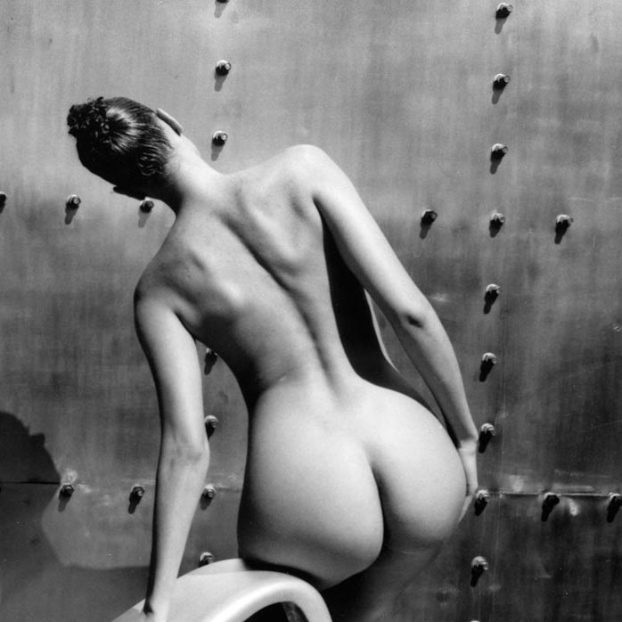
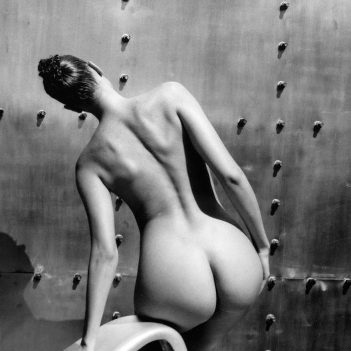

PHOTOGRAPHIES
The Photography
It is the reality that prevails. Artistic photography is an imaginary representation of the real world. In this approach, the photographer uses himself to describe his emotions, his feelings, his vision of the world and of life.